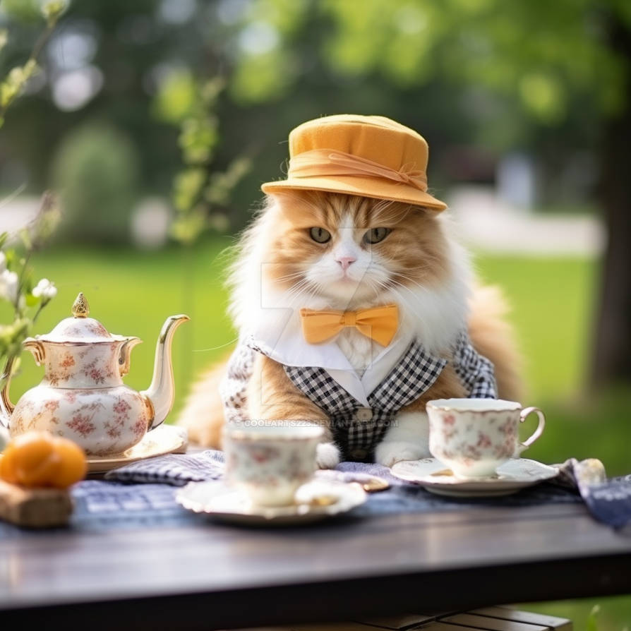
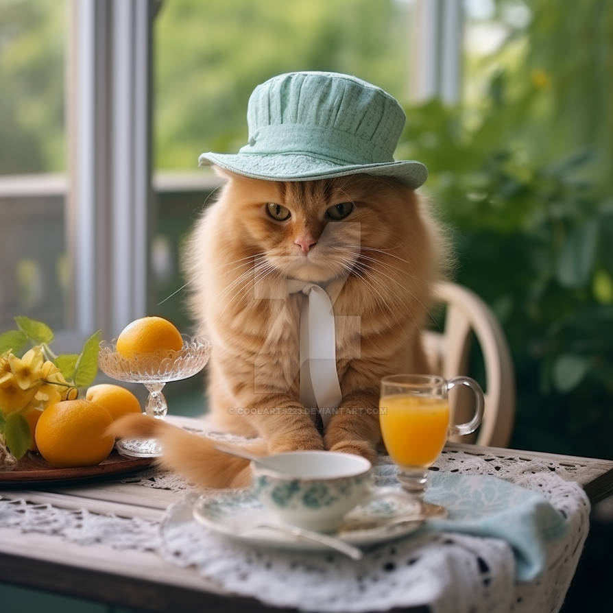
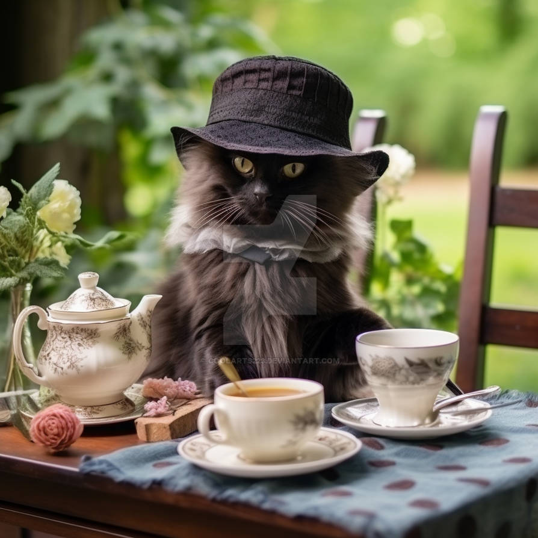
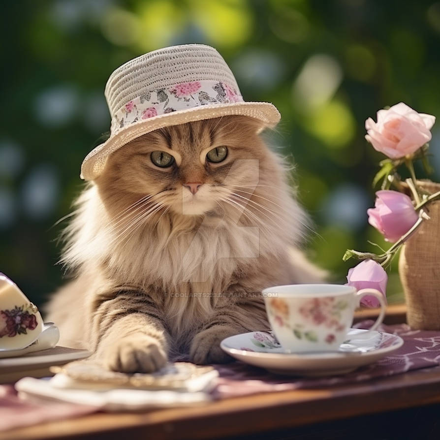
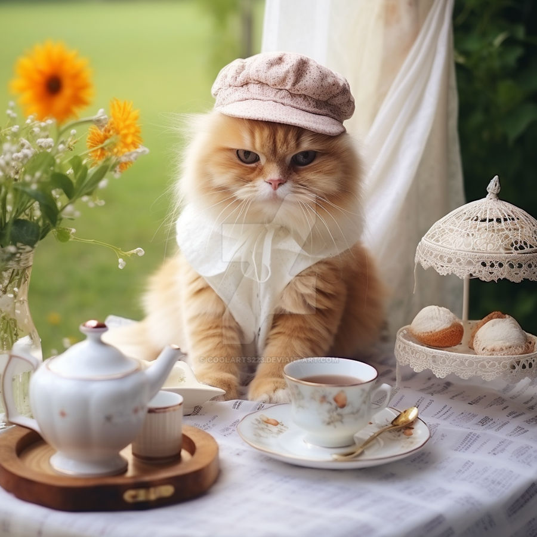

-
Tea bags
A tea bag, or the compound teabag, is a small, porous, sealed bag or packet, typically containing tea leaves or the leaves of other herbs, which is immersed in water to steep and make an infusion. Originally used only for tea (Camellia sinensis), they are now made with other tisanes ("herbal teas") as well.
-
Loose tea
The tea leaves are packaged loosely in a canister, paper bag, or other container such as a tea chest. Some whole teas, such as rolled gunpowder tea leaves, which resist crumbling, are vacuum-packed for freshness in aluminised packaging for storage and retail. The loose tea is individually measured for use, allowing for flexibility and flavour control at the expense of convenience.
-
Compressed tea
Compressed tea (such as pu-erh) is produced for convenience in transport, storage, and ageing. It can usually be stored longer without spoilage than loose leaf tea. Compressed tea is prepared by loosening leaves from the cake using a small knife, and steeping the extracted pieces in water.
During the Tang dynasty, as described by Lu Yu, compressed tea was ground into a powder, combined with hot water, and ladled into bowls, resulting in a "frothy" mixture.
Instant tea
Instant tea is a powdered mix in which water is added, in order to reconstitute it into a cup of tea. The earliest form of instant tea was developed in the United Kingdom in 1885.
A patent was granted for a paste made of concentrated tea extract, sugar, and evaporated milk, which became tea when hot water was added. However, no notable developments were made until spray drying technology allowed for drying the tea concentrates at a temperature which did not damage the flavors of the product.
Bottled and canned tea
Canned tea is a relatively recent method of marketing tea which has been sold traditionally as leaf tea and also, for the last 100 years, in tea bag form. It utilises the canning process to produce a ready made drink.
Perceived advantages includes ease of use (minimal or no preparation time) and the possibility of additives (such as flavours or sugar); the disadvantages are the cost of shipment (and therefore the price of the product) and a lack of freshness.
Learn more...Types of Tea Types of Tea Black Tea Green Tea Herbal Tea White Tea Oolong Tea Rooibos Tea Popular Varieties Assam Tea Matcha Hibiscus Tea Silver Needle (Baihao Yinzhen) Ti Kuan Yin (Iron Goddess of Mercy) Red Rooibos Earl Grey Tea Dragonwell Green Tea Peppermint Darjeeling Tea Sencha Chamomile Tea White Peony (Bai Mudan) Dan Cong (Phoenix Tea) Green Rooibos English Breakfast Tea Gunpowder Green Tea Yerba maté